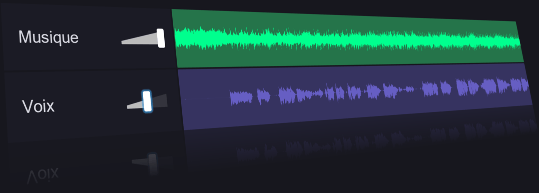

Supprimer et Retirer la Voix d'une Chanson
Séparer la voix de la musique à partir d'une chanson grâce à de puissants algorithmes d'IA

Séparer les voix d'une musique
Cette application en ligne gratuite aidera à supprimer les voix d'une chanson en créant un karaoké.
Une fois que vous aurez choisi une chanson, l'intelligence artificielle séparera les voix des instrumentaux. Vous obtiendrez deux pistes - une version karaoké de votre chanson (sans voix) et une version acapella (voix isolées).
En dépit de la complexité et du coût élevé du service, vous pouvez l'utiliser absolument gratuitement. Le traitement prend généralement environ 10 secondes.